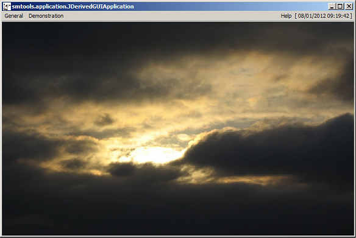

public final class JDerivedGUIApplication extends JStandardGUIApplication implements java.awt.event.ActionListener
JDerivedGUIApplication class is a demonstration of the SMTools GUI framework.
When this class's main(String[]) method is invoked, the resulting
GUI looks as follows:

Refer to the JStandardGUIApplication class for further information.
Note that this class cannot be subclassed!
JStandardGUIApplication,
Serialized Formjavax.swing.JFrame.AccessibleJFramejava.awt.Window.AccessibleAWTWindow, java.awt.Window.TypefResources, kAutoSizeGUI, kFullScreenGUI, klafGTK, klafMac, klafMetal, klafMotif, klafNimbus, klafQuaqua, klafSystem, klafWindows, klafWindowsClassicaccessibleContext, EXIT_ON_CLOSE, rootPane, rootPaneCheckingEnabledCROSSHAIR_CURSOR, DEFAULT_CURSOR, E_RESIZE_CURSOR, HAND_CURSOR, ICONIFIED, MAXIMIZED_BOTH, MAXIMIZED_HORIZ, MAXIMIZED_VERT, MOVE_CURSOR, N_RESIZE_CURSOR, NE_RESIZE_CURSOR, NORMAL, NW_RESIZE_CURSOR, S_RESIZE_CURSOR, SE_RESIZE_CURSOR, SW_RESIZE_CURSOR, TEXT_CURSOR, W_RESIZE_CURSOR, WAIT_CURSORBOTTOM_ALIGNMENT, CENTER_ALIGNMENT, LEFT_ALIGNMENT, RIGHT_ALIGNMENT, TOP_ALIGNMENT| Constructor and Description |
|---|
JDerivedGUIApplication(java.lang.String[] argv)
Constructs a
JDerivedGUIApplication object. |
| Modifier and Type | Method and Description |
|---|---|
void |
actionPerformed(java.awt.event.ActionEvent e)
|
protected void |
createGUIToolBar()
|
protected java.lang.String |
getApplicationLocalePrefix()
|
protected java.lang.String |
getApplicationResourceArchiveFilename()
|
protected void |
getGUIContentPane(javax.swing.JPanel contentPane)
|
protected javax.swing.JPanel |
getGUIGlassPane()
|
protected java.awt.Image |
getGUIIcon()
|
protected java.awt.Dimension |
getGUIInitialSize()
|
protected java.util.ArrayList<javax.swing.JMenu> |
getGUIMenus()
|
protected javax.swing.JMenu |
getGUIRightHandMenu()
|
protected javax.swing.JLabel |
getGUISplashScreenContent()
|
protected java.io.InputStream |
getGUISplashScreenSound()
|
protected java.util.ArrayList<javax.swing.JLabel> |
getGUIStatusBarCustomLabels()
|
protected java.lang.String |
getGUITitle()
|
protected java.lang.String |
getGUIToolBarTitle()
|
protected boolean |
hasGUIAboutBox()
|
protected void |
initialiseApplication(java.lang.Object[] parameters)
|
protected boolean |
isGUIClockEnabled()
|
protected boolean |
isGUIStatusBarEnabled()
|
static void |
main(java.lang.String[] argv)
The application's entry point.
|
protected boolean |
parseApplicationParameter(int paramNr,
java.lang.String parameter)
|
protected void |
showGUIAboutBox()
|
abortApplication, addGUIToolBarButton, addGUIToolBarComponent, addGUIToolBarSeparator, beep, componentHidden, componentMoved, componentResized, componentShown, constructGUICheckBoxMenuItem, constructGUICheckBoxMenuItem, constructGUIMenuItem, constructGUIMenuItem, constructGUIRadioButtonMenuItem, constructGUIRadioButtonMenuItem, getApplicationRequiredMajorJavaVersion, getApplicationRequiredMinorJavaVersion, getGUIInitialLookAndFeel, getGUIInitialSoundSet, getGUIScreenInsets, getGUIScreenSize, getGUISplashScreen, getGUIStatusBar, getGUISystemSoundsEnabledOnStartup, getGUIToolBarActionMap, getGUIToolBarInputMap, guiLookAndFeelChanged, guiWindowResized, hideGUIMouseCursor, hideGUIToolBar, isGUIMinimiseToSystemTrayAllowed, isGUIRepaintedWhenResizing, isGUIResizable, isGUIToolBarFloatable, loadApplicationRegistry, setGUIDynamicLayout, showApplicationParameterWarning, showGUIDefaultMouseCursor, showGUIToolBar, showGUIWaitMouseCursor, shutdownApplication, windowActivated, windowClosed, windowClosing, windowDeactivated, windowDeiconified, windowIconified, windowOpenedaddImpl, createRootPane, frameInit, getAccessibleContext, getContentPane, getDefaultCloseOperation, getGlassPane, getGraphics, getJMenuBar, getLayeredPane, getRootPane, getTransferHandler, isDefaultLookAndFeelDecorated, isRootPaneCheckingEnabled, paramString, processWindowEvent, remove, repaint, setContentPane, setDefaultCloseOperation, setDefaultLookAndFeelDecorated, setGlassPane, setIconImage, setJMenuBar, setLayeredPane, setLayout, setRootPane, setRootPaneCheckingEnabled, setTransferHandler, updateaddNotify, getCursorType, getExtendedState, getFrames, getIconImage, getMaximizedBounds, getMenuBar, getState, getTitle, isResizable, isUndecorated, remove, removeNotify, setBackground, setCursor, setExtendedState, setMaximizedBounds, setMenuBar, setOpacity, setResizable, setShape, setState, setTitle, setUndecoratedaddPropertyChangeListener, addPropertyChangeListener, addWindowFocusListener, addWindowListener, addWindowStateListener, applyResourceBundle, applyResourceBundle, createBufferStrategy, createBufferStrategy, dispose, getBackground, getBufferStrategy, getFocusableWindowState, getFocusCycleRootAncestor, getFocusOwner, getFocusTraversalKeys, getIconImages, getInputContext, getListeners, getLocale, getModalExclusionType, getMostRecentFocusOwner, getOpacity, getOwnedWindows, getOwner, getOwnerlessWindows, getShape, getToolkit, getType, getWarningString, getWindowFocusListeners, getWindowListeners, getWindows, getWindowStateListeners, hide, isActive, isAlwaysOnTop, isAlwaysOnTopSupported, isAutoRequestFocus, isFocusableWindow, isFocusCycleRoot, isFocused, isLocationByPlatform, isOpaque, isShowing, isValidateRoot, pack, paint, postEvent, processEvent, processWindowFocusEvent, processWindowStateEvent, removeWindowFocusListener, removeWindowListener, removeWindowStateListener, reshape, setAlwaysOnTop, setAutoRequestFocus, setBounds, setBounds, setCursor, setFocusableWindowState, setFocusCycleRoot, setIconImages, setLocation, setLocation, setLocationByPlatform, setLocationRelativeTo, setMinimumSize, setModalExclusionType, setSize, setSize, setType, setVisible, show, toBack, toFrontadd, add, add, add, add, addContainerListener, applyComponentOrientation, areFocusTraversalKeysSet, countComponents, deliverEvent, doLayout, findComponentAt, findComponentAt, getAlignmentX, getAlignmentY, getComponent, getComponentAt, getComponentAt, getComponentCount, getComponents, getComponentZOrder, getContainerListeners, getFocusTraversalPolicy, getInsets, getLayout, getMaximumSize, getMinimumSize, getMousePosition, getPreferredSize, insets, invalidate, isAncestorOf, isFocusCycleRoot, isFocusTraversalPolicyProvider, isFocusTraversalPolicySet, layout, list, list, locate, minimumSize, paintComponents, preferredSize, print, printComponents, processContainerEvent, remove, removeAll, removeContainerListener, setComponentZOrder, setFocusTraversalKeys, setFocusTraversalPolicy, setFocusTraversalPolicyProvider, setFont, transferFocusDownCycle, validate, validateTreeaction, add, addComponentListener, addFocusListener, addHierarchyBoundsListener, addHierarchyListener, addInputMethodListener, addKeyListener, addMouseListener, addMouseMotionListener, addMouseWheelListener, bounds, checkImage, checkImage, coalesceEvents, contains, contains, createImage, createImage, createVolatileImage, createVolatileImage, disable, disableEvents, dispatchEvent, enable, enable, enableEvents, enableInputMethods, firePropertyChange, firePropertyChange, firePropertyChange, firePropertyChange, firePropertyChange, firePropertyChange, firePropertyChange, firePropertyChange, firePropertyChange, getBaseline, getBaselineResizeBehavior, getBounds, getBounds, getColorModel, getComponentListeners, getComponentOrientation, getCursor, getDropTarget, getFocusListeners, getFocusTraversalKeysEnabled, getFont, getFontMetrics, getForeground, getGraphicsConfiguration, getHeight, getHierarchyBoundsListeners, getHierarchyListeners, getIgnoreRepaint, getInputMethodListeners, getInputMethodRequests, getKeyListeners, getLocation, getLocation, getLocationOnScreen, getMouseListeners, getMouseMotionListeners, getMousePosition, getMouseWheelListeners, getName, getParent, getPeer, getPropertyChangeListeners, getPropertyChangeListeners, getSize, getSize, getTreeLock, getWidth, getX, getY, gotFocus, handleEvent, hasFocus, imageUpdate, inside, isBackgroundSet, isCursorSet, isDisplayable, isDoubleBuffered, isEnabled, isFocusable, isFocusOwner, isFocusTraversable, isFontSet, isForegroundSet, isLightweight, isMaximumSizeSet, isMinimumSizeSet, isPreferredSizeSet, isValid, isVisible, keyDown, keyUp, list, list, list, location, lostFocus, mouseDown, mouseDrag, mouseEnter, mouseExit, mouseMove, mouseUp, move, nextFocus, paintAll, prepareImage, prepareImage, printAll, processComponentEvent, processFocusEvent, processHierarchyBoundsEvent, processHierarchyEvent, processInputMethodEvent, processKeyEvent, processMouseEvent, processMouseMotionEvent, processMouseWheelEvent, removeComponentListener, removeFocusListener, removeHierarchyBoundsListener, removeHierarchyListener, removeInputMethodListener, removeKeyListener, removeMouseListener, removeMouseMotionListener, removeMouseWheelListener, removePropertyChangeListener, removePropertyChangeListener, repaint, repaint, repaint, requestFocus, requestFocus, requestFocusInWindow, requestFocusInWindow, resize, resize, revalidate, setComponentOrientation, setDropTarget, setEnabled, setFocusable, setFocusTraversalKeysEnabled, setForeground, setIgnoreRepaint, setLocale, setMaximumSize, setName, setPreferredSize, show, size, toString, transferFocus, transferFocusBackward, transferFocusUpCyclepublic JDerivedGUIApplication(java.lang.String[] argv)
JDerivedGUIApplication object.argv - an array of strings containing the command-line parameterspublic void actionPerformed(java.awt.event.ActionEvent e)
actionPerformed in interface java.awt.event.ActionListeneractionPerformed in class JStandardGUIApplicatione - the ActionEvent that is receivedprotected void createGUIToolBar()
createGUIToolBar in class JStandardGUIApplicationprotected java.lang.String getApplicationLocalePrefix()
getApplicationLocalePrefix in class JStandardGUIApplicationI18NL10Nprotected java.lang.String getApplicationResourceArchiveFilename()
getApplicationResourceArchiveFilename in class JStandardGUIApplicationJARResourcesprotected void getGUIContentPane(javax.swing.JPanel contentPane)
getGUIContentPane in class JStandardGUIApplicationcontentPane - the GUI's main content pane to modifyprotected javax.swing.JPanel getGUIGlassPane()
getGUIGlassPane in class JStandardGUIApplicationprotected java.awt.Image getGUIIcon()
getGUIIcon in class JStandardGUIApplicationImage containing the GUI's iconprotected final java.awt.Dimension getGUIInitialSize()
getGUIInitialSize in class JStandardGUIApplicationDimension objectprotected java.util.ArrayList<javax.swing.JMenu> getGUIMenus()
getGUIMenus in class JStandardGUIApplicationArrayList of menusJStandardGUIApplication.getGUIRightHandMenu()protected javax.swing.JMenu getGUIRightHandMenu()
getGUIRightHandMenu in class JStandardGUIApplicationJStandardGUIApplication.getGUIMenus()protected javax.swing.JLabel getGUISplashScreenContent()
getGUISplashScreenContent in class JStandardGUIApplicationJLabel containing the splash screen's custom contentJSplashScreenprotected java.io.InputStream getGUISplashScreenSound()
getGUISplashScreenSound in class JStandardGUIApplicationJSplashScreen,
MP3Playerprotected java.util.ArrayList<javax.swing.JLabel> getGUIStatusBarCustomLabels()
getGUIStatusBarCustomLabels in class JStandardGUIApplicationArrayList of custom labels, or null if none are providedprotected java.lang.String getGUITitle()
getGUITitle in class JStandardGUIApplicationprotected java.lang.String getGUIToolBarTitle()
getGUIToolBarTitle in class JStandardGUIApplicationprotected boolean hasGUIAboutBox()
hasGUIAboutBox in class JStandardGUIApplicationboolean indicating whether or not a custom about box is availableJAboutBoxprotected void initialiseApplication(java.lang.Object[] parameters)
initialiseApplication in class JStandardGUIApplicationparameters - an array of Objectsprotected boolean isGUIClockEnabled()
isGUIClockEnabled in class JStandardGUIApplicationprotected boolean isGUIStatusBarEnabled()
isGUIStatusBarEnabled in class JStandardGUIApplicationpublic static void main(java.lang.String[] argv)
argv - an array of strings containing the command-line parametersprotected boolean parseApplicationParameter(int paramNr,
java.lang.String parameter)
parseApplicationParameter in class JStandardGUIApplicationparamNr - the number of the parameter that is being parsedparameter - the unmodified parameter as specified on the command-linetrue if the parameter was parsed successfully, false otherwiseJStandardGUIApplication.showApplicationParameterWarning(int,String,String)protected void showGUIAboutBox()
showGUIAboutBox in class JStandardGUIApplicationJAboutBox